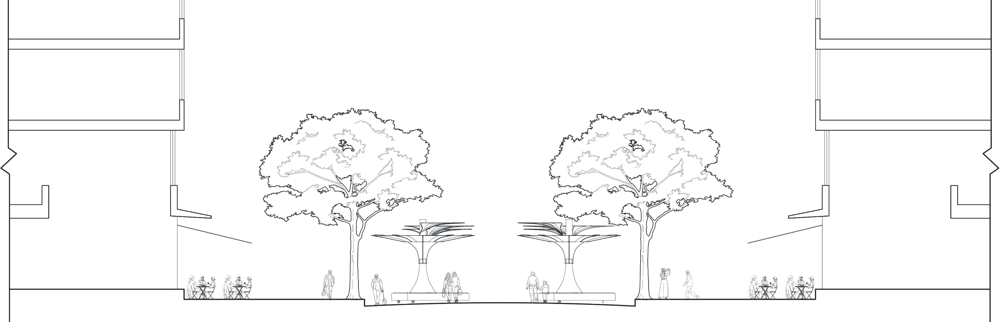

A shade that reads people, in the heat of Daxue Road
在大学路的热浪里，一台读得懂人的遮阳装置
Design Studio · Final Review 设计课结题汇报 Daxue Road weekend pedestrian street, Yangpu, Shanghai 上海杨浦 · 大学路周末步行街 November 2026
Ten HeatWeaves, staggered along the carriageway
十台热织，沿车道交错排开
On weekends the carriageway opens to pedestrians. The units roll into the middle in two staggered rows — between the tree crowns, right on the hottest strip — and roll back on weekdays.
周末车道开放，装置推到车道中央，两排交错、避开树冠，落在最热的带子上；平日撤回。
Daxue Road, full length 267 m 大学路全段10 units 10 台
HeatWeave, leaf span ≈ 4.6 m 热织，叶片展开约 4.6 mBelow: west section enlarged, 15–130 m 下：西段放大Top: key plan, red frame = enlarged area 上：全段索引
The sun's path through a day is also the order of this talk
一天里太阳走过的路，也是汇报的顺序
01
Where the heat comes from
热从哪里来
Shanghai heat on Daxue Road 上海的热浪与大学路的阳光
02
A shade that moves
一个会动的遮阳者
Upper follows the sun, lower reads people 上层追太阳，下层读人
03
If I were it
如果我是它
How it sees, thinks and moves 我怎么看、怎么想、怎么动
04
Does it really move like this?
它真的会这样动吗
Simulation and MR 模拟与 MR
13:00, 14 June: a third of Daxue Road lies in full sun
6 月 14 日 13:00，大学路三分之一的地面暴露在阳光下
35%
of grid cells receive more than 230 Wh/m². 267 m × 38 m street, 101,348 cells of 0.32 m, Ladybug hourly radiation.
的网格累计辐射高于 230 Wh/m²（全街 101,348 个网格）
0 230 575 Wh/m²
Grey cells are in shade — trees, arcades and buildings block the sun. Only cells above the threshold are coloured. 灰色为阴影；只有高于阈值的网格才着色。
Hover over the street to read each cell 鼠标移到街道上读取辐射值
Trees shade the sidewalks; the weekend carriageway has none
树荫留给了人行道，周末的车道却没有遮挡
88%
of the central 4 m in direct sun
车道中央 4 m 被直射
14%
on the sidewalks
两侧人行道（树冠与骑楼下）
Trees and arcades shade both sidewalks. Sunlight reaches the ground only through the gap between the crowns, in the middle of the carriageway — that is where HeatWeave stands, catching it with its leaves.
阳光只从两排树冠之间落到车道中央——热织就放在这里，用叶片接住它。
Blocked by trees and awnings 被树冠、雨篷挡住
Caught by HeatWeave leaves 被热织叶片接住
Direct sun on the ground 直射地面

If I were it
如果我是它
I stand in the middle of the carriageway. Every 0.35 s, the camera in my column looks down at the street, and I answer the same four questions.
我站在车道中央，每 0.35 秒用中柱相机看一眼街道，回答同样的四个问题。
1Where is the sun, where is it hottest?太阳在哪，哪里最热？Upper leaves rotate 上层转向
2Who is below, and what are they doing?下面是谁，在做什么？Skeleton & activity 骨骼与活动
3How should the eight leaves move?八片叶子怎么动？Fields → 18 targets 灰阶 → 18 个目标
4After moving, are they still comfortable?动完之后还舒服吗？Look again next frame 下一帧再看
A shade that reads people
一个会读人的遮阳者
Rolled into the carriageway on weekends, stored on weekdays. The three-way bench is a place to stay; eight leaves overhead, in two layers, answer to different things.
周末推到车道中央，平日撤回；三向座椅供人停留，八片叶子分两层，各管一件事。
Upper ×3上层 3 片
Horizontal rotation only — follows the sun and sends shade where it is hottest.只做水平旋转，把阴影送到最热处
Lower ×5下层 5 片
Lift, tilt and a synchronised up/down fold — follow the people below.升降、翻转、两端同步上下折叠，跟随下面的人
Column中柱
A hollow “chimney” housing the mechanism and a ZED depth camera.中空烟囱，内置机构与 ZED 深度相机
Base底座
Slot vents on the three curved faces and the feet: cool air enters low and exhausts up the column.弧面与脚底开条形进风口：冷空气下进、经中柱上排
Each leaf has only four moves
每片叶子只有四个动作
One move for the upper leaves, three for the lower. The two tips fold together, like a foldable screen — down to close, up to open.
上层一个动作，下层三个。两端一起折，像折叠屏：下折合拢，上折打开。
Upper U1–U3 上层
ψRotation水平旋转360°Follows sun and crowd 追随太阳与人群
Lower L1–L5 下层
hLift整体升降−0.6–0 mHead clearance 头顶净空
θTilt前后翻转±8°Front opening 前方开口
δSynced fold两端同步折叠±0.35 mDown encloses, up opens 下折围合，上折打开
Sets the clearance the leaves keep. If head points are missing, estimated 0.35 m above the chest.决定净空；头部缺失时按胸部上方 0.35 m 估算
Trunk lean λ躯干前倾
Pelvis-to-chest angle, forward positive; feeds the tilt rule.骨盆到胸椎的倾角，前倾为正
Head pitch α头部俯仰
Looking down at a phone, or up at the street.低头看手机，还是抬头看街
Stability Cs稳定度
Head-direction variation over 3 s: Cs = 1 − clamp(√(σ²yaw + σ²pitch) / 10°, 0, 1). Geometric, not attention.3 秒内头部转动的波动；只代表几何稳定，不代表专注
Activity labels (work / rest / look out) were planned from a vision-language model; the interface is ready, currently set by hand. 活动标签原计划由视觉大模型给出，接口已留，目前手动选择。
Question 3 问题 3
People change, so it changes; it changes, so people and the street change too
人在变，它跟着变；它变了，人和环境也跟着变
Behaviour · ZED skeleton 行为骨骼
Question 4 问题 4
Look again after moving — but don't chase every head turn
动完再看一次，但不追每一次转头
0.5 s持续
A new target must hold for half a second新目标需持续半秒
20 mm · 2°死区
Smaller changes are ignored更小的变化不动作
30 mm/s · 3°/s限速
Speed limits for lift and rotation升降与转角限速
τ = 1 + 2Cs平滑
The steadier, the slower; 1.5 s for other activities越稳定动得越慢
New person换人
Tracking ID changes → history cleared跟踪编号变化即清空历史
Live simulation of the same filter: light line = target each frame, dark line = actual leaf motion. The person sits at 6 s and stands at 12 s. 同一套滤波的实时模拟：浅线为目标，深线为实际；第 6 秒坐下，第 12 秒站起。
Closing the four questions into a loop
把四个问题连成一圈
The implemented pipeline: sense, decide, act — then carry the result into the next frame.
感知、判断、行动，再把结果带入下一帧。
Implemented, running live in Grasshopper 已在 Grasshopper 中实时运行
Interface ready, not yet connected 接口已留，尚未接入
Groups fused via the density field (C1); group detection not yet validated 多人经 C1 密度场融合，成组识别待验证
Feedback: actions change shade and posture 反馈：动作改变遮阳与姿态
The loop runs in the digital model: actual leaf geometry feeds the next frame; motors not yet connected. 闭环目前在数字模型中运行，尚未连接电机。
Back at street scale: four MR walkthroughs
回到街道尺度：MR 实景检验
Scale尺度
Device against trees, buildings and lane width与树冠、建筑、车道的关系
Clearance净空
Head-to-leaf distance when sitting or standing坐、站时头顶到叶片
Sightline视线
Does the leaf edge clear the view?膜边是否让出视线
Limits边界
MR tests spatial experience, not cooling只检验空间体验，不证明降温
Click a video to play or pause. 点击视频播放 / 暂停。
C1Two people talking两人交谈 · 密度
C2One sits, one stands一坐一站 · 净空
C3Head down at a phone低头玩手机 · 俯仰
C4Resting, a passer-by静坐与路人 · 稳定
Shade that answers people, on a weekend street
让临时开放的街道，拥有会回应人的阴影
Done已实现
Radiation drives the upper leaves; the skeleton drives three lower moves; four fields and a time filter form a live digital loop.辐射驱动上层；骨骼驱动下层三个动作；灰阶与滤波构成实时数字闭环
Limits边界
Groups not detected automatically; VLM labels not connected; no motors or cooling measurements yet.成组未自动识别；大模型未接入；未接电机、未测降温
Next下一步
Connect activity labels and scoring; recompute the environment after shading; test the mechanism on site.接入活动标签与评分；遮阳后环境再计算；实体联调